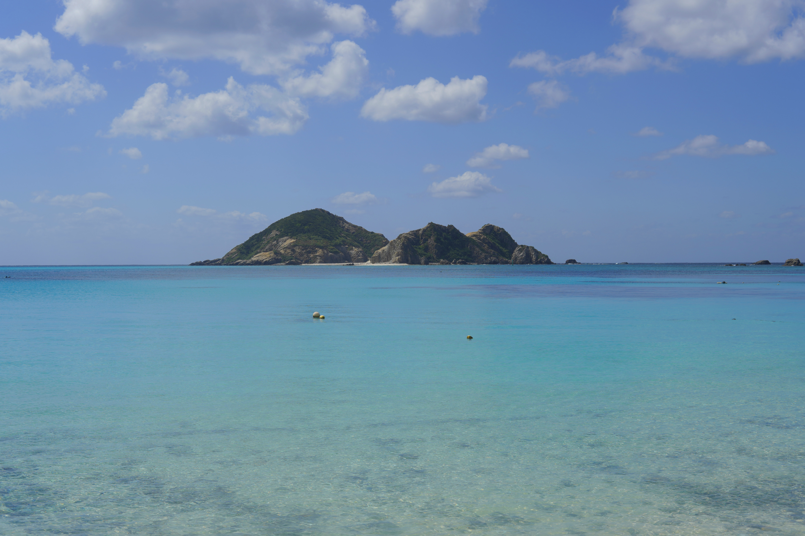

<html lang="jp"></html>
<head>
    <title>うら・もの</title>
    <style>
        body{
            background-image: url(./image/huahua.jpg);
        }

        .nav {
            border: rgb(192, 159, 174) 8px solid;
            border-style: ridge;
            border-radius: 30px;
            background-image: url(./image/IMG_7181.jpg);
            line-height: 100px;
            margin: 0 50px;
            text-align: center;
        }
            .nav p{
            display: inline-block;
            padding: 0 20px;
            height: 110px;
            font-size: 35px;
            color: rgb(255, 255, 255);
            text-decoration: none;
            }

        
        .b {
            background-color: rgba(115, 207, 207, 0.455);
            border: rgb(73, 116, 114) 20px solid;
            border-style: ridge;
            width: auto;
            height: 1500px;
            text-align: center;
            margin: 50 0px;
        }
        .d {
            margin: 20px auto;
            border: rgb(255, 255, 255) 5px solid;

        }

        .text {
            border: rgb(162, 177, 230) 10px solid;
            background-color: rgba(185, 224, 239, 0.608);
            border-style:inset;
            border-radius: 40px;
            text-align: center;
            height: 50px;
            line-height: 55px;
            width: 70px;
            margin: 30 660px;
        }
        .text a{
            color: rgba(0, 0, 0, 0.481);
            font-size: 25px;
            font-family:Georgia, 'Times New Roman', Times, serif;
            text-decoration: none;
        }
        .text:hover{
            box-shadow: -10px 10px 15px 10px rgba(0, 0, 0, 0.406); 
        }

        .oknw{
            background-color: rgba(97, 237, 202, 0.455);
            border: rgb(27, 125, 94) 20px solid;
            border-style: ridge;
            width: auto;
            height: 2000px;
            text-align: center;
            margin: 50 0px;
        }
        .ssy{
            background-color: hsla(0, 34%, 64%, 0.611);
            border: rgb(61, 20, 20) 20px solid;
            border-style: ridge;
            width: auto;
            height: 1650px;
            text-align: center;
            margin: 50 0px;
        }

        .zusi{
            background-color: rgba(203, 156, 98, 0.455);
            border: rgb(91, 91, 10) 20px solid;
            border-style: ridge;
            width: auto;
            height: 1400px;
            text-align: center;
            margin: 50 0px;
        }


        </style>
<body>
    <body oncontextmenu="return false"></body>
    <body onselectstart="return false"></body>
    <body oncopy="return false"></body>
<div class="nav">  
    <p>いつも良い天気へ</p>
</div>
<div class="text">
    <a href="./index.html">押</a>
</div>
<div class="zusi">
    
    
    
    
    
    
    <p>SONY α7r3　FE 40mm F2.5 G</p>
    <p>逗子市　森戸海岸</p>
</div>
<div class="b">
    
    
    
    
    
    
    <p>SONY α7r3　FE　85mm　1.8</p> 
    <p>神奈川県相模原市愛川町</p>

</div>
<div class="oknw">
    
    
    
    
    <p>SONY α6100 E 16-70mm F4.0 ZA OSS</p>
    
    <P>SONY α7r3　E 30mm F1.4</P>
    
    <p>SONY α6100　FE　85mm　1.8</p>
    <p>渡嘉敷島</p>
</div>
<div class="ssy">
    
    
    
    
    
    <p>SONY α6100 E 16-70mm F4.0 ZA OSS</p>
    <p>三溪園</p>
</div>
</div>

</body>
